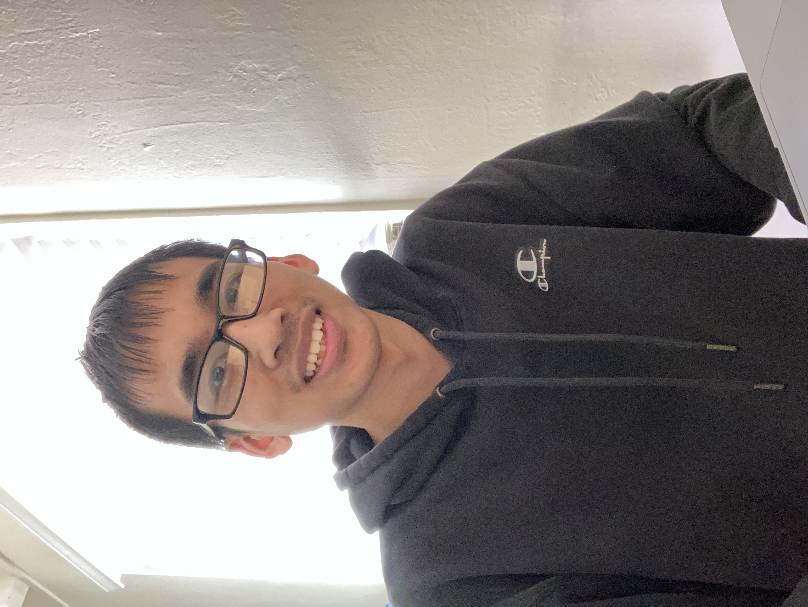

Introduction
I like to spend my time learning new things/solving problems. Other than that, maybe hanging out with friends, going on an occasional walk and looking around.
Computer Science / Mathematics Enjoyer

I like to spend my time learning new things/solving problems. Other than that, maybe hanging out with friends, going on an occasional walk and looking around.
Working on projects is the most enjoyable part of learning, where I can best figure out the details. So far, I have dived into graphics heavy projects, which are cool to visualize, and more recently, front-end related projects such as designing a website.
Favorite projects I've done include developing this website, implementing an RTree, RRT path planning algorithm, and a 3D reconstruction algorithm.
I started off in math, but decided cs would be more fun, especially because of the blend of theory and hands on application that comes with a computer science degree.
Math courses did feel more enjoyable to take, as there were often cool/powerful ideas and techniques used. The way a theory is built from the ground up is very magical. It just lacked the little bit of the application that I desired.
CS courses had much more work to do, and many topics to learn to be functional at programming. So it did feel a little bit dry learning the tools needed to build a program. It is, however, rewarding to finish a project and see the components fit nicely together.
On the very applied side of the spectrum is electrical engineering. It had some very cool applications, but its low-level and hands-on nature wasn't desirable.
Other courses outside of these topics were a breath of fresh air. The professors were especially engaging for these topics and it was nice seeing something different than what I was usually exposed to.
I grew up most of my life learning the piano, but have taken up other things on the side for added fun. Cooking is fun at times, especially if I have some free time. For some reason I find baking more enjoyable.